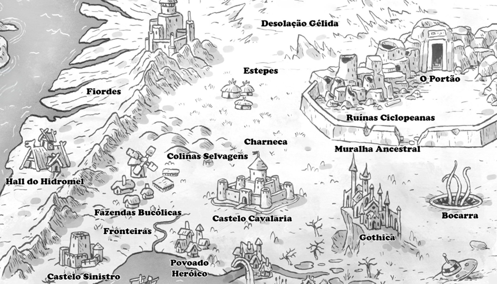
Phantasia é cheio de lugares a se explorar, alguns conhecidos, outros nem tanto, e outros que alguém ainda precisa descobrir.
Abaixo, alguns lugares de destaque no continente.
Entre os fiordes gelados do Norte vive um dos grupos mais incomuns de anões de Phantasia: os Baleeiros. Diferente de seus parentes das montanhas, que moldam pedra e metal, esses anões voltaram seus olhos para o mar, estabelecendo uma vila robusta à beira das falésias, construída para resistir aos ventos cortantes e às marés imprevisíveis.
A vida ali gira em torno da caça às baleias. No entanto, ao contrário do que muitos poderiam esperar, os Baleeiros não tratam essa atividade como simples exploração. Para eles, cada caça é um ritual. Quando uma baleia é abatida, há silêncio, respeito e agradecimento, como se honrassem um espírito antigo. Essa postura, muitas vezes comparada à reverência dos elfos pela natureza, é parte essencial de sua identidade: eles não veem as baleias apenas como recurso, mas como entidades dignas de respeito.
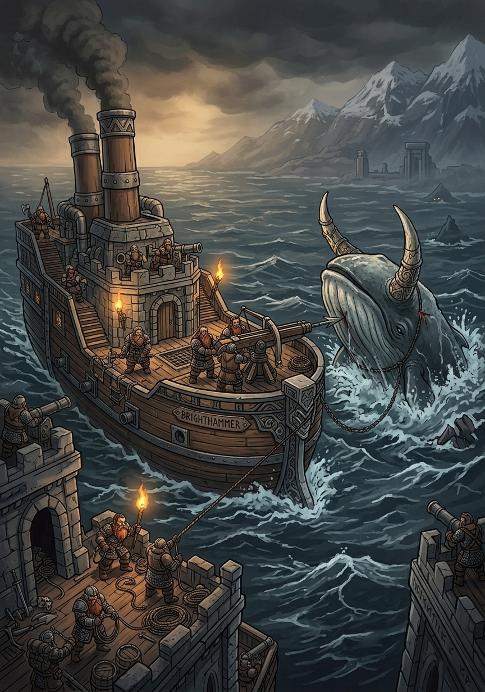
Da carne extraem alimento para sustentar sua comunidade durante os longos invernos; do óleo, produzem combustível, iluminação e materiais valiosos que são comercializados com outras regiões de Phantasia. Esse comércio garante sua sobrevivência e mantém sua relativa independência, embora muitos ainda os vejam como um povo excêntrico, distante das tradições anãs mais conhecidas.
Apesar de sua aparente tranquilidade, a vida dos Baleeiros está longe de ser fácil. As águas dos fiordes escondem perigos constantes.
A imponente Boca do Dragão ergue-se no extremo sul de Phantasia, um vulcão colossal cujas encostas negras e irregulares exalam calor constante e vapores sulfurosos. Seus flancos são marcados por antigos rios de lava solidificada, formando paisagens ásperas e quase inóspitas. À noite, um brilho avermelhado pode ser visto pulsando de seu interior, como se algo vivo respirasse sob a crosta, uma visão que alimenta tanto o temor quanto a reverência dos navegantes.
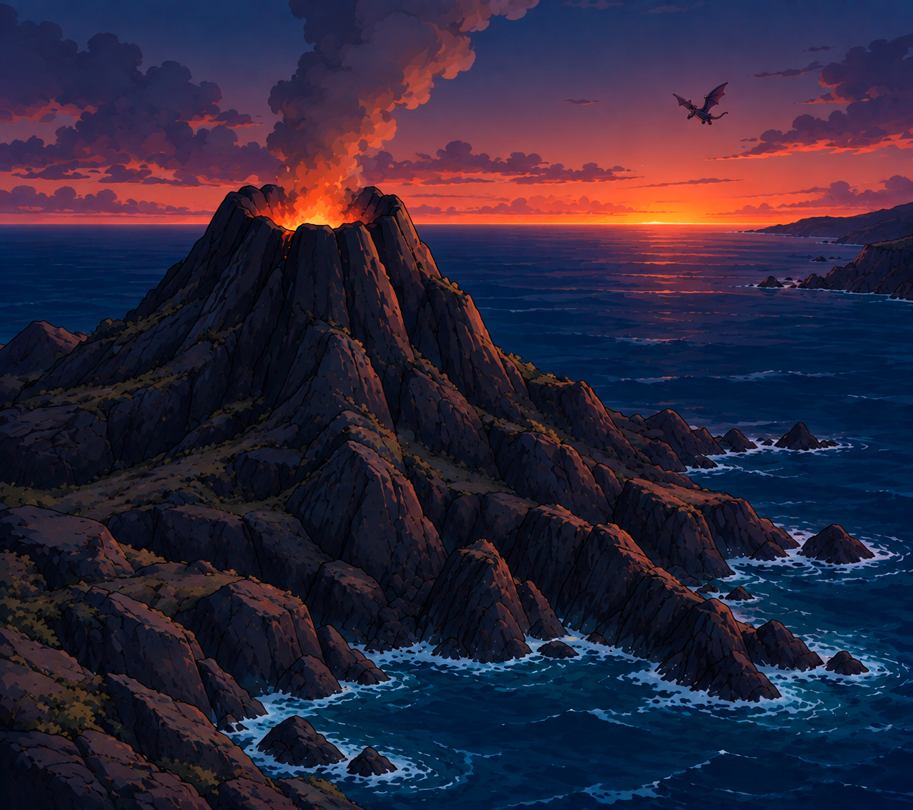
Diz-se que sua última grande erupção ocorreu séculos antes da ascensão de Marco Luzbrilhante, em um cataclismo que remodelou toda a região sul.
Cultos e estudiosos arcanos são atraídos por sua energia, acreditando que ali reside uma fonte de poder primordial, talvez ligada à própria essência do mundo ou a entidades antigas. Outros, mais supersticiosos, afirmam que a Boca do Dragão não é apenas um fenômeno natural, mas a prisão de algo muito antigo e perigoso.
No coração de Phantasia ergue-se o imponente Castelo Cavalaria, residência da família real e símbolo máximo da autoridade do reino. É de seus salões amplos, adornados com bandeiras e ecos de antigas vitórias, que decisões moldam o destino de toda a nação, guiando seu povo entre tempos de prosperidade e incerteza. O castelo é cercado por uma cidade ativa e moderna, onde negócios prosperam e mistérios são discutidos nas sombras. A maioria dos grandes grupos de aventureiros está aqui quando não explorando, descansando entre um trabalho e outro.
Ao redor do castelo floresceu uma cidade vibrante e em constante movimento, considerada a mais moderna de todo o reino. Mercadores, artesãos e banqueiros fazem dela um centro de riqueza e inovação, onde oportunidades surgem a cada esquina. No entanto, sob essa aparência próspera, existe uma camada mais obscura: becos silenciosos, sociedades secretas e intrigas políticas que se desenrolam longe dos olhos do público. Não é por acaso que muitos dos mais renomados grupos de aventureiros escolhem este lugar como base — aqui, contratos são fechados, rumores circulam livremente e sempre há algo acontecendo, seja nas tavernas iluminadas ou nas sombras mais profundas.
Ao redor da cidade ficam as fazendas do reino, terrenos férteis que garantem o sustento da capital, pontuadas por moinhos, celeiros e pequenas comunidades rurais. Há uma pequena quantidade de vilas ao norte, nas estepes, e a leste, nos pântanos.
O porto mercantil do reino fica ao sul e é de onde saem todas as embarcações para outros continentes. Outros povoados e cidades existem nos arredores.
O rei e a rainha não são mais casados, mas governam juntos, respeitando mutuamente as decisões do parceiro de governo. Alguns consideram isso um equilíbrio delicado (e eles realmente se estranham e brigam de vez em quando), mas tem funcionado bem pelos últimos 10 anos.
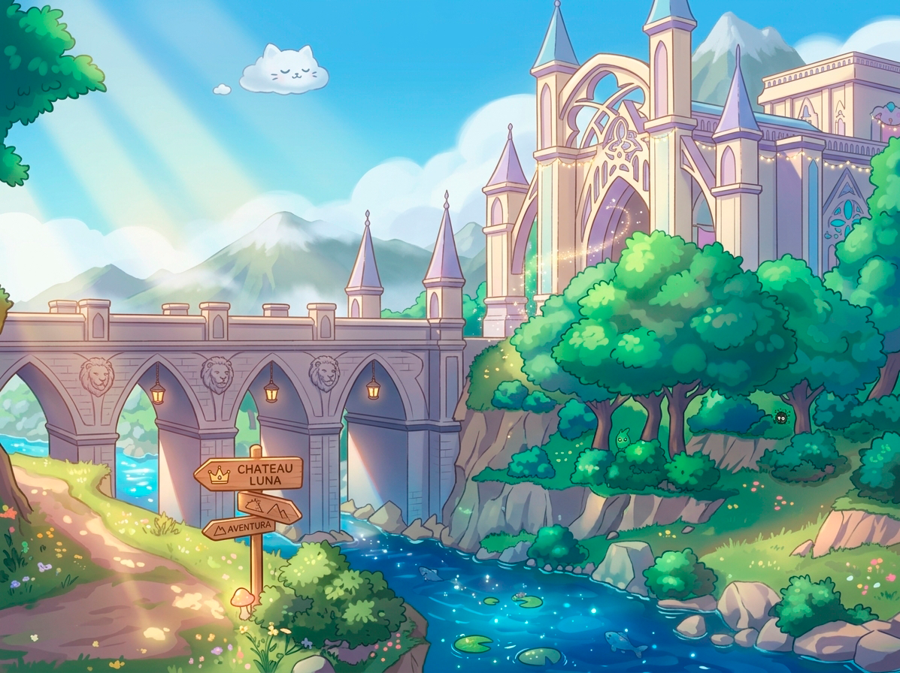
Outrora conhecido como Castelo Solário, símbolo máximo do poder e da unidade de Phantasia, o que hoje se ergue no mesmo lugar é uma sombra distorcida de sua antiga glória. Após a ascensão do lich Maniel, a antiga capital foi tomada e transformada em seu domínio pessoal, tornando-se um ponto de temor constante no imaginário do povo. Suas muralhas, antes claras e imponentes, agora parecem absorver a luz ao redor, e suas torres se projetam contra o céu como lanças negras. O próprio ar nas proximidades é pesado, carregado por uma sensação de inquietação que afasta até os mais corajosos.
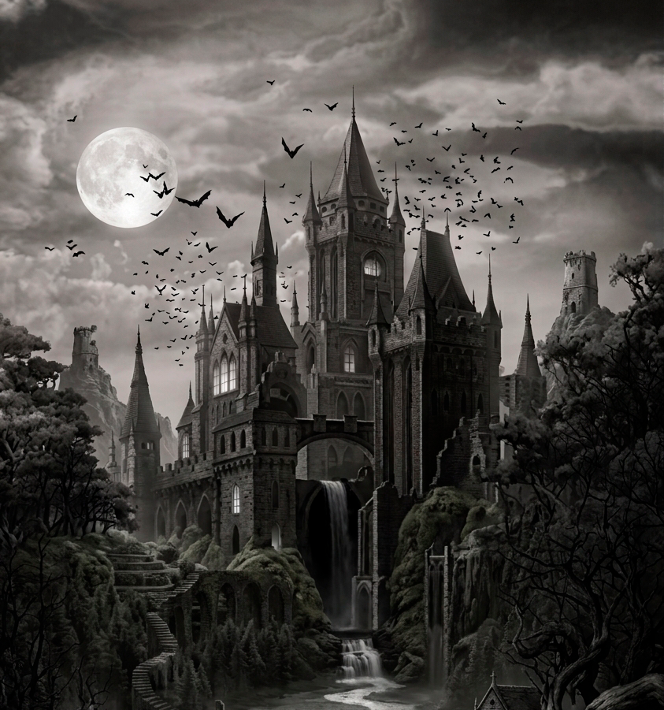
Há décadas nenhum relato confiável menciona ter visto ou ouvido o próprio Maniel. Ainda assim, sua presença é inegável. Durante esse tempo, soldados de natureza desconhecida e criaturas mágicas entram e saem do castelo em intervalos irregulares.
O castelo é cercado por poderosas barreiras mágicas conhecidas como as Fronteiras, que isolam completamente a região e impedem qualquer aproximação direta. Essas barreiras não apenas bloqueiam passagem física, mas também distorcem magia e percepção, tornando impossível estudar o local à distância com precisão. Parte da estrutura do castelo se estende até os fiordes de Phantasia, onde penhascos íngremes encontram águas profundas e escuras, criando uma defesa natural quase intransponível.
O Cemitério dos Ghouls é um vasto campo de sepulturas antigas, onde lápides quebradas, mausoléus em ruínas e túmulos abertos se espalham até onde a vista alcança. A vegetação cresce de forma desordenada e doentia, com árvores retorcidas e raízes que parecem emergir das próprias covas. Foi aqui que Maniel conseguiu seu primeiro exército.
O que antes foi um local de descanso tornou-se um território profanado. Mortos-vivos vagam livremente entre as sepulturas — ghouls famintos, esqueletos errantes e outras formas mais perturbadoras. Diz-se que a terra em si está corrompida, incapaz de manter os mortos em repouso, como se alguma força invisível os puxasse de volta à existência.
No centro dessa vasta necrópole ergue-se uma antiga construção, intacta apesar da passagem do tempo. A antiga capela hoje acomoda uma pequena comunidade de mortos vivos conscientes, que sabem que se voltarem à sociedade serão... bem, mortos de novo.
Há ainda um grupo de fantasmas que cuida de seus corpos reanimados ocos.
Apesar do nome, a Cidadela dos Gigantes não é habitada por criaturas de tamanho colossal, mas sim pela memória daqueles que moldaram o destino de Phantasia. “Gigantes” é como o povo se refere aos maiores nomes da história do Reinado: líderes, generais, magos, pensadores e heróis cujas ações ecoaram através das eras. A cidade foi erguida como um tributo a esses indivíduos, tornando-se ao mesmo tempo um local de honra, estudo e reverência.
Suas avenidas são largas e solenes, ladeadas por estátuas monumentais, mausoléus elaborados e salões dedicados à preservação da memória. Parte museu, parte cemitério, parte centro acadêmico, a cidade abriga registros detalhados de feitos históricos, artefatos lendários e bibliotecas que guardam saberes raros. Muitos dos maiores estudiosos do Reinado vivem e trabalham ali, dedicando suas vidas a estudar o passado, interpretar suas lições e garantir que os feitos e erros dos Gigantes jamais sejam esquecidos.
Mas a Cidadela dos Gigantes não é apenas um lugar de contemplação. É também um centro de influência. A elite acadêmica, militar, política e arcana de Phantasia mantém presença constante ali, seja em vida, participando de conselhos e debates, seja na morte, repousando em túmulos que se tornam locais de visitação e respeito. Para muitos, ter seu nome associado à cidade, mesmo em vida, já é um sinal de prestígio incomparável.
Ainda assim, há quem diga que a cidade guarda mais do que memória. Alguns acreditam que certos túmulos não estão tão silenciosos quanto parecem, ou que antigos conhecimentos e objetos poderosos são ali preservados em segredo, esquecidos. Na Cidadela dos Gigantes, o passado nunca está realmente morto. Ele observa, ensina... e, talvez, ainda intervenha.
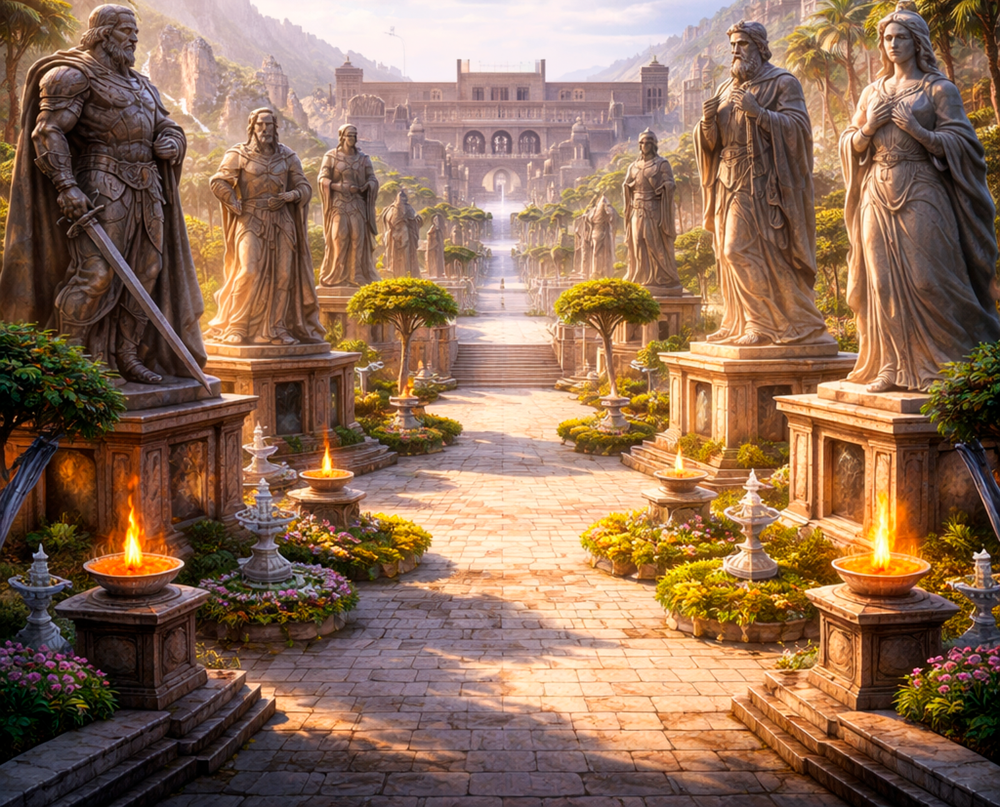
Erguida no coração de um vasto deserto, a cidade desafia a própria lógica da sobrevivência, florescendo onde poucos imaginariam possível. Suas construções mesclam pedra clara e metais reluzentes, projetadas para refletir o calor intenso do sol e aproveitar cada sopro de vento que cruza as dunas. Oásis artificiais, canais engenhosamente planejados e torres de captação de água sustentam sua existência, enquanto caravanas carregadas fluem por ali constantemente, transformando o lugar em um dos pontos comerciais mais movimentados de todo o Reinado.
Com o tempo, a cidade tornou-se não apenas um polo de riqueza, mas o verdadeiro centro mercantil e tecnológico de Phantasia. É aqui que as maiores fortunas se concentram, abrigando famílias influentes, magnatas e inventores visionários que financiam e impulsionam avanços nunca antes vistos. Oficinas e academias trabalham lado a lado criando engenhocas curiosas e máquinas capazes de redefinir o equilíbrio de poder.
No entanto, tamanha prosperidade também atrai ambição e rivalidade: acordos são feitos em salões luxuosos, enquanto traições e disputas silenciosas se desenrolam nos bastidores. Nesta cidade, riqueza é poder e o poder, muitas vezes, é tão volátil quanto as areias que a cercam.
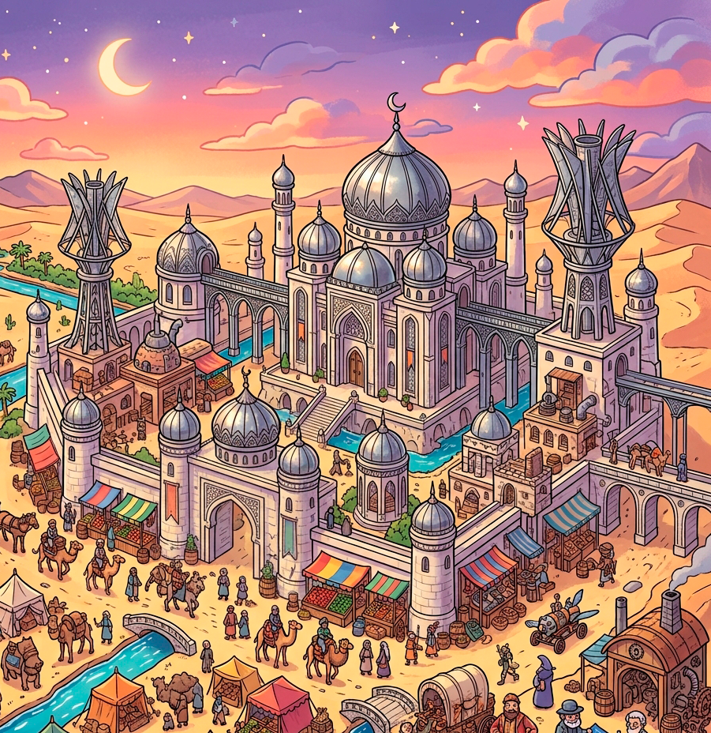
A Cidade das Sandálias ergue-se como o coração pulsante da cultura no Reinado, onde ruas largas de pedra clara são constantemente preenchidas por músicos, atores e pensadores vindos de todas as regiões. Seus teatros monumentais rivalizam em grandiosidade, enquanto praças abertas se transformam em palcos improvisados para debates acalorados, apresentações poéticas e exibições de talento.
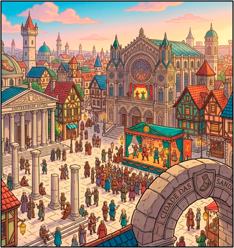
Universidades antigas, com colunas gastas pelo tempo, abrigam estudiosos que dedicam suas vidas à busca do conhecimento, atraindo aprendizes ambiciosos e mentes brilhantes. Ao cair da noite, a cidade não silencia — lanternas douradas iluminam festivais, cortejos artísticos e encontros filosóficos que atravessam a madrugada, tornando-a um lugar onde ideias são tão valiosas quanto ouro e onde até o mais simples viajante pode se tornar parte de algo grandioso.
Exploradores e estudiosos encontraram ruínas parcialmente expostas de uma cidade milenar soterrada no deserto.
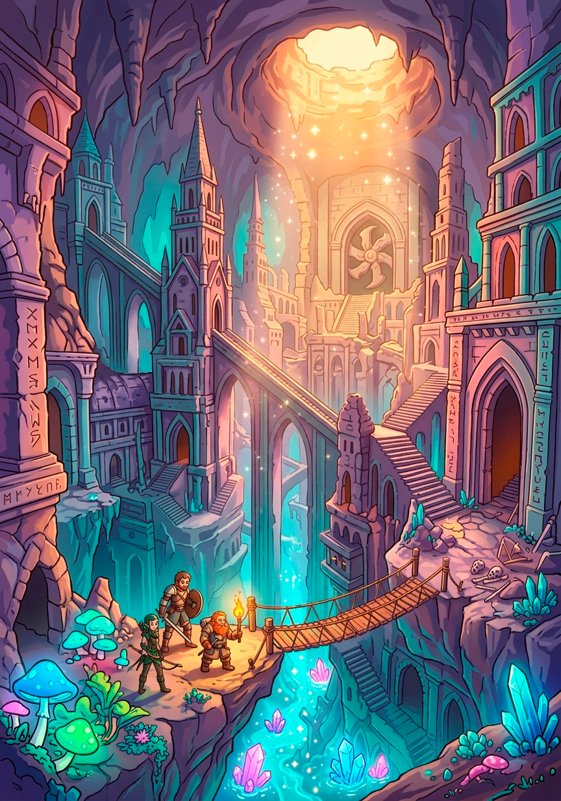
Tempestades de areia revelaram torres quebradas, arcos de pedra ornamentados e inscrições desgastadas por eras de abandono. No entanto, avançar além dessas áreas superficiais tem se mostrado extremamente perigoso. O próprio deserto parece proteger o que está enterrado: dunas que se movem repentinamente, passagens que desmoronam sem aviso e mecanismos antigos que ainda funcionam, transformando corredores em armadilhas mortais.
Criaturas adaptadas à escuridão e ao calor extremo também habitam as ruínas, tornando cada incursão uma aposta contra a morte.
Entre as lendas de Phantasia, poucas despertam tanta fascinação quanto a da Cidade Voadora, oculta além das nuvens e raramente vislumbrada por olhos mortais. Histórias descrevem torres suspensas, pontes de luz e estruturas que parecem feitas de pura magia, flutuando silenciosamente sobre o mundo. Alguns afirmam que ela só pode ser encontrada por aqueles considerados dignos, revelando-se em momentos específicos, enquanto outros acreditam que sua posição muda constantemente, tornando sua localização impossível de prever.
Diz-se que a própria essência da cidade é moldada por magia ancestral, uma força tão pura e poderosa que é capaz de conceder os desejos mais profundos daqueles que a alcançam, mas nunca sem um preço. Por toda a história de Phantasia há relatos de exploradores que jamais voltaram, desaparecendo após perseguirem sinais da cidade nos céus.
Entre todos os mitos, um dos mais persistentes é o que liga a Cidade Voadora ao lendário dragão imortal Gereon, conhecido como o primeiro mago do mundo. Segundo as histórias, foi ele quem ergueu ou descobriu a cidade, tornando-a seu domínio e guardando seus segredos. Alguns acreditam que Gereon ainda vive ali, observando o mundo abaixo.
Seja como for, a Cidade Voadora permanece como um símbolo de poder, mistério e ambição. Para alguns, é um conto para inspirar; para outros, um destino a ser alcançado. Mas todos concordam em uma coisa: se ela realmente existe, não é um lugar que se encontra por acaso. É um lugar que escolhe quem pode encontrá-lo.
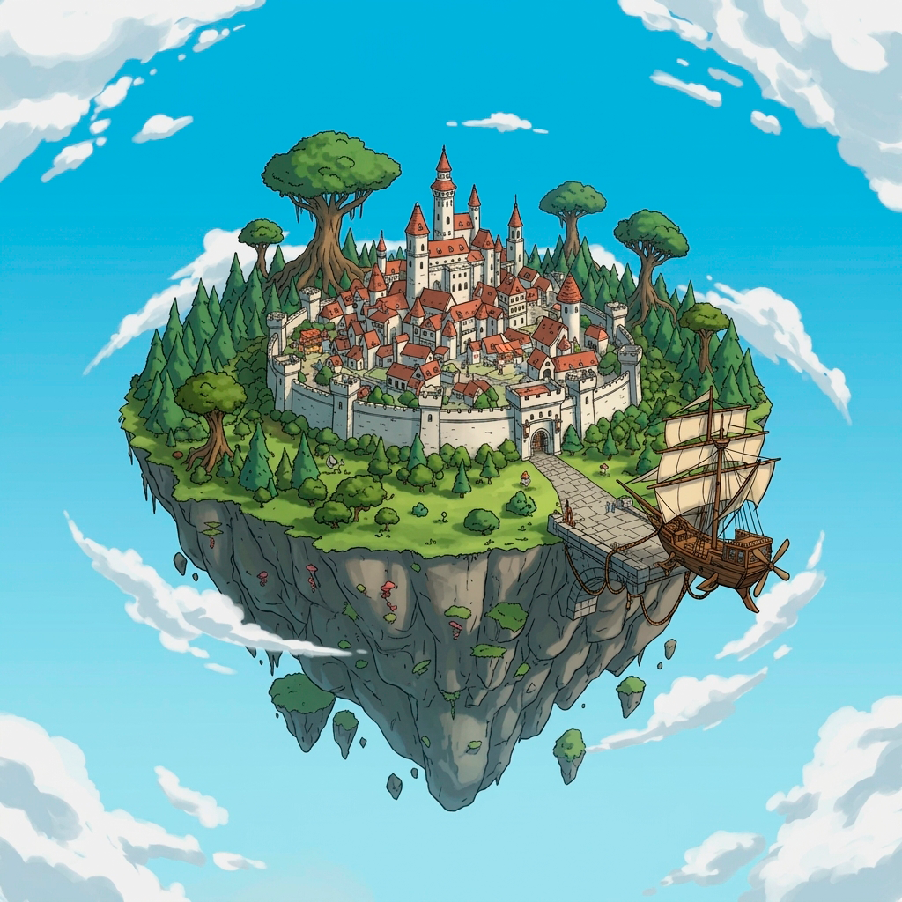
Ao norte de Phantasia estende-se a Desolação Gélida, uma vasta e implacável região onde o frio domina tudo o que existe. Planícies congeladas, montanhas cobertas por neve eterna e lagos solidificados compõem uma paisagem tão bela quanto mortal para os desavisados. Oito meses por ano, ventos cortantes varrem a terra sem descanso, e tempestades invernais surgem com frequência brutal, capazes de apagar trilhas, engolir viajantes e transformar o horizonte em um véu branco interminável. O sol, quando aparece, pouco aquece, servindo mais como um lembrete distante de um mundo menos hostil.
Apesar das condições extremas, a Desolação não é desabitada. Na verda, possui fauna e flora riquíssimas. Terras duras criam pessoas duras, e daqui saem os bárbaros mais fortes e casca dura do Reinado, moldando suas vidas em torno da perseverança, da caça e da força. Tribos bárbaras percorrem essas terras, adaptadas ao frio intenso e aos perigos constantes, desenvolvendo uma cultura baseada na resistência, na honra e na superação. São conhecidos em todo o Reinado como guerreiros formidáveis não apenas pela força física, mas pela dureza de espírito forjada em um ambiente que não perdoa fraquezas.
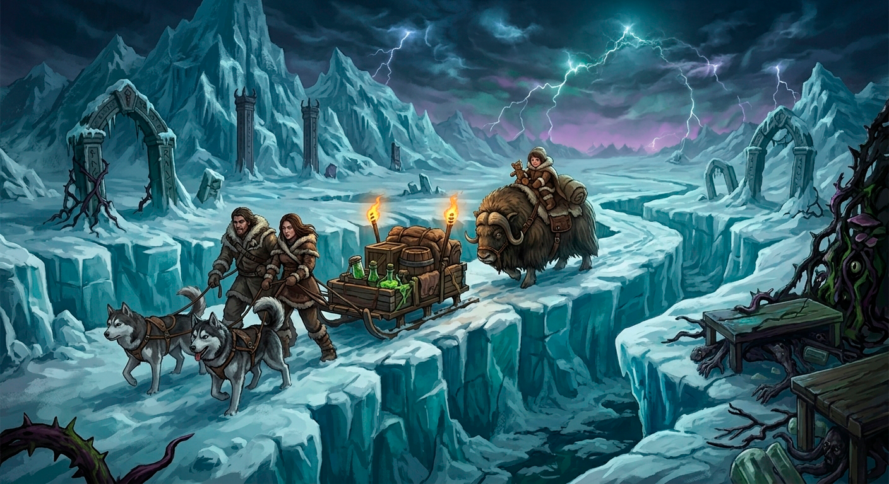
Entre dunas, colinas desgastadas e camadas de terra acumuladas ao longo de eras, encontra-se um dos sítios arqueológicos mais intrigantes de Phantasia: as Estátuas Enterradas. O local atrai estudiosos, curiosos e turistas de todo o Reinado, não apenas por sua imponência, mas pelo mistério que envolve suas origens.
Partes de esculturas colossais emergem do solo (rostos de pedra, mãos, fragmentos de corpos). O que mais intriga os pesquisadores são as inscrições que cobrem essas estruturas. Símbolos geométricos, padrões repetitivos e marcas cuidadosamente esculpidas coincidem com aquelas encontradas nas chamadas Tumbas Geométricas, sugerindo uma conexão direta entre os dois locais e possivelmente com a mesma civilização antiga que deixou vestígios por todo o continente. No entanto, assim como nas tumbas, esses símbolos resistem à tradução completa, desafiando gerações de estudiosos e alimentando teorias.
Escavações têm sido realizadas ao longo dos anos, mas com progresso lento e cauteloso. O sentimento geral em Phantasia é de que o local deve ser preservador como está.
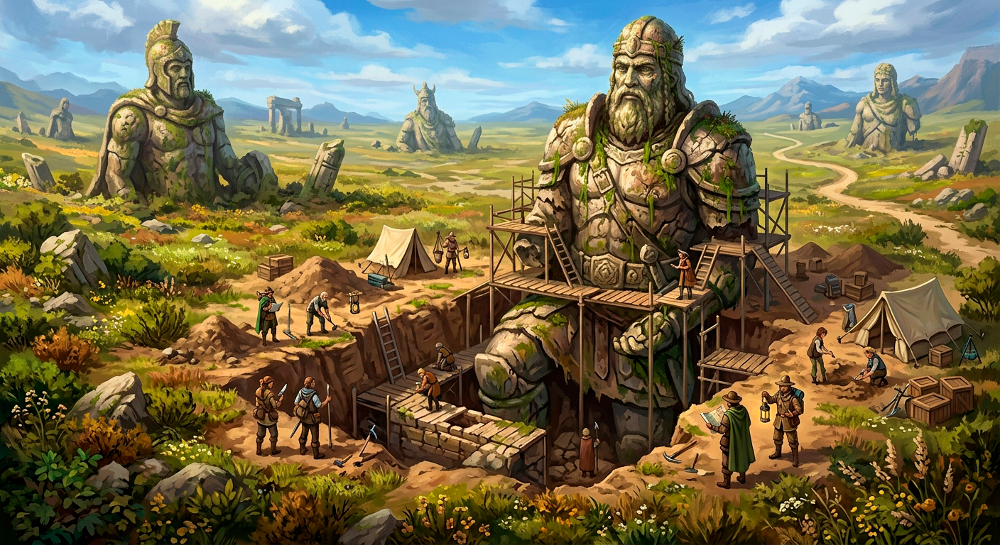
Apesar de seu caráter turístico, o local atrai aventureiros com seus mistérios.
Uma vasta e exuberante floresta estende-se por léguas intermináveis, um mar verde onde a luz do sol se filtra em feixes dourados entre copas antigas e imponentes. Rios cristalinos serpenteiam entre raízes milenares, e a vida pulsa em cada canto — desde as menores criaturas até espíritos da natureza que, segundo dizem, caminham livremente entre as árvores.
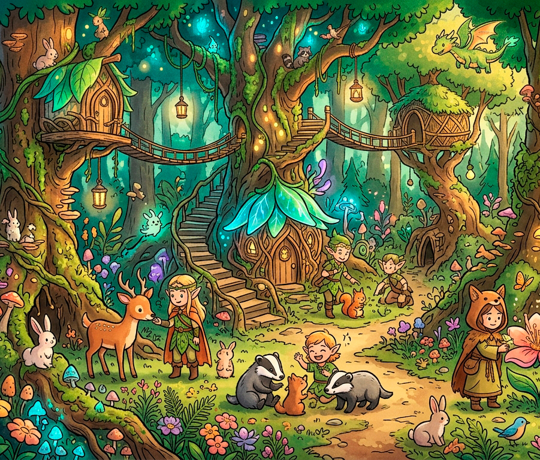
Este é o lar dos elfos de Phantasia, um povo que não apenas habita a floresta, mas faz parte dela, vivendo em perfeita harmonia com seus ciclos, respeitando seus limites e protegendo seus segredos. Suas cidades não são erguidas contra a natureza, mas moldadas a partir dela: pontes vivas, estruturas entrelaçadas em troncos gigantescos e clareiras sagradas onde o tempo parece desacelerar.
Desde o reinado de Marco I, os elfos mantêm um vínculo formal com a coroa, respondendo ao Reinado em termos de aliança e cooperação. Ainda assim, o tratado firmado naquela época garante a eles autonomia plena sobre o território florestal, um acordo respeitado ao longo das gerações não apenas por honra, mas por necessidade. Nenhum exército de Phantasia atravessa aquelas terras sem permissão, e poucos forasteiros ousam entrar sem guia. A floresta guarda seus próprios mistérios e perigos, e os elfos, silenciosos e vigilantes, asseguram que qualquer ameaça, externa ou interna, seja contida antes mesmo de alcançar suas fronteiras.
Outrora uma extensão viva e luminosa dos domínios élficos, a Floresta Negra carrega hoje apenas o eco distorcido do que já foi. Antigas canções élficas descrevem um lugar tão belo quanto a própria Floresta Encantada, repleto de vida, harmonia e magia serena; mas tudo isso foi corrompido após a passagem do lich Maniel Luzveloz. Ninguém sabe ao certo o que ele fez ali, nem por quê, mas o resultado é inegável: a floresta foi desvirtuada em sua essência, tornando-se um território onde a natureza parece sofrer e resistir ao mesmo tempo.
As árvores cresceram de forma retorcida, com troncos escurecidos e galhos que se estendem como garras contra o céu. A luz mal atravessa o dossel, criando uma penumbra constante onde sombras parecem se mover por conta própria.
A própria magia do lugar é instável, poderosa, porém corrompida, afetando criaturas, distorcendo caminhos e alterando a percepção de quem ousa entrar. Bestas que antes seriam comuns tornaram-se monstruosidades, e há relatos de entidades que não pertencem ao mundo natural. Diz-se que a floresta não apenas engana os sentidos, mas testa a mente e o espírito, revelando medos profundos e sussurrando pensamentos que não são seus.
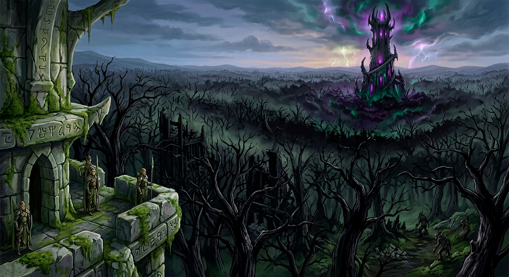
De pontos elevados do Reinado, é possível avistar, entre as copas escuras, a ponta de uma torre retorcida, erguendo-se como um espinho contra o horizonte. Muitos acreditam que esse é o verdadeiro coração da corrupção, um vestígio direto do poder de Maniel, e que enquanto ela permanecer de pé a Floresta Negra jamais deixará de ser um lugar de trevas vivas e inquietas.
A leste de Cavalaria ergue-se Gothica, uma cidade de silhueta marcante, construída no topo de um monte escarpado cujas encostas são cobertas por trilhas sinuosas e antigos muros de contenção. De longe, suas torres estreitas e templos de pedra escura parecem tocar o céu, envoltos quase sempre por névoas suaves que lhe conferem um ar solene e enigmático.
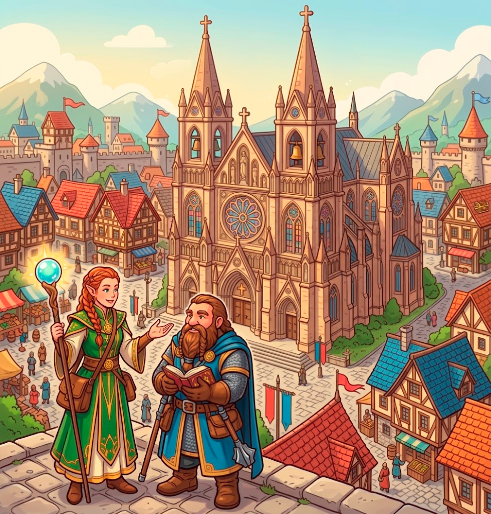
Após o isolamento do Monastério Plácido, Gothica ascendeu rapidamente como o principal centro religioso de Phantasia, atraindo peregrinos, estudiosos e curiosos em busca de orientação espiritual ou respostas para inquietações mais profundas. Apesar de Phantasia jamais ter sido dominado por uma única fé, a cidade tornou-se palco de uma mudança sutil, porém poderosa.
Nos últimos anos, um líder religioso carismático conquistou influência crescente, unificando diferentes crenças sob um discurso aparentemente conciliador. Muitos veem nisso uma nova era de ordem espiritual; outros, mais cautelosos, sussurram que Gothica pode estar deixando de ser apenas um refúgio de fé para se tornar o epicentro de algo muito maior.
Escondido nos fiordes gelados do Norte, encontra-se o Hall do Hidromel, uma comunidade isolada que serve de base para o grupo conhecido como Vândalos. À primeira vista, o local lembra um assentamento rústico e resistente, com grandes salões de madeira, forjas ativas e bandeiras marcadas por símbolos próprios. O nome vem do enorme salão central, onde barris de hidromel nunca parecem esvaziar e onde decisões importantes são tomadas entre risos altos, discussões acaloradas e alianças firmadas sob juramentos informais.
Os Vândalos são um grupo diverso, composto principalmente por elfos, humanos e anões que, por diferentes razões, romperam com as estruturas tradicionais de Phantasia. Alguns são ex-aventureiros, outros exilados, desertores ou simplesmente indivíduos que rejeitam as regras do Reinado. Apesar da imagem caótica que projetam, há uma organização interna clara: lideranças respeitadas, funções bem definidas e um senso de pertencimento que mantém o grupo unido. Eles se veem menos como saqueadores e mais como aqueles que tomam para si o que acreditam não ter donos legítimos.
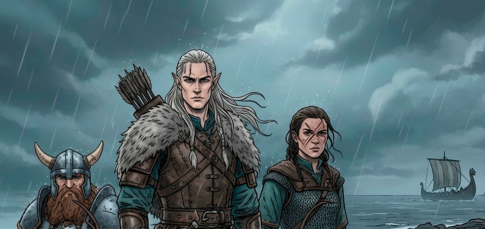
Apesar de sua crescente influência, o Hall do Hidromel ainda é pouco conhecido pelo restante do Reinado, em parte por sua localização difícil de alcançar e em parte pela discrição estratégica de seus membros. No entanto, rumores sobre suas atividades começam a se espalhar e com eles a preocupação. Se os Vândalos continuarem a expandir suas ações sem controle, o que começou como uma comunidade rebelde pode rapidamente se tornar uma força capaz de desestabilizar o delicado equilíbrio de Phantasia.
O Hall é um lugar de contrastes. Pode ser encontrado ali tanto o criminoso mais procurado de uma cidade quanto o explorador que acabou de salvar uma vila de um monstro. Para os Vândalos, isso não é uma contradição. É apenas a vida.
Muito ao noroeste do continente, além dos fiordes gelados e das águas agitadas que poucos ousam atravessar, encontra-se a lendária Ilha das Fadas, um lugar onde a magia da natureza se manifesta de forma pura e quase intocada, crua. Cercada por neblinas encantadas e correntes imprevisíveis, a ilha raramente é vista por outras espécies.
A vida ali floresce em abundância incomum. Criaturas raras habitam seus bosques e céus, e a própria flora possui propriedades mágicas, sendo capaz de curar, proteger ou punir. As fadas não são apenas seres delicados como muitos imaginam, mas entidades antigas e poderosas.
Nos últimos tempos, porém, algo tem perturbado a harmonia. Um grupo conhecido como Vândalos tem causado problemas crescentes, desrespeitando os limites impostos pelas fadas e, ao que tudo indica, explorando ou saqueando recursos mágicos da ilha. Com isso, as fadas agora se mostram mais ativas e presentes no continente.
Ao sul de Phantasia, espalhadas entre águas traiçoeiras e rotas pouco mapeadas, encontram-se as ilhas que abrigam grupos de piratas e outros aventureiros do mar. O pequeno arquipélago que serve como refúgio para corsários, contrabandistas e navegadores que vivem à margem das leis do Reinado. Apesar da fama de caos e violência associada aos piratas, esse território funciona sob um conjunto rígido de códigos não escritos, mantidos com surpreendente seriedade. Ali, conflitos pessoais são deixados de lado, acordos são respeitados e todos têm direito a descanso, comércio e segurança, desde que sigam as regras locais.
As ilhas são um ponto de encontro vibrante, onde mercadorias de origens duvidosas mudam de mãos, informações valiosas circulam livremente e alianças improváveis são formadas em tavernas barulhentas à beira-mar. Capitães experientes, tripulações exóticas e figuras enigmáticas compartilham o mesmo espaço, criando uma atmosfera única onde o perigo e a oportunidade caminham lado a lado. Para muitos aventureiros, é um dos poucos lugares onde se pode encontrar o que não existe em nenhum outro canto de Phantasia, seja um mapa raro, uma relíquia proibida ou um trabalho bem pago. Desde que não se façam muitas perguntas, é claro. O maior ponto de encontro é a Taverna do Dragão Afogado.
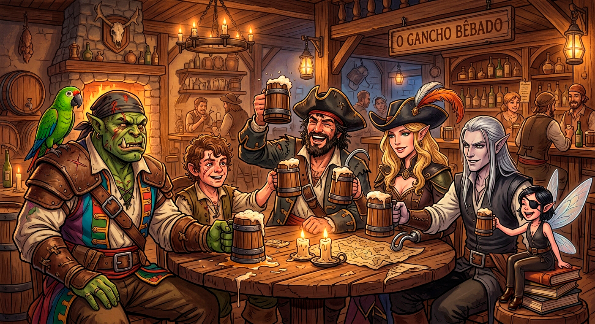
No entanto, mesmo entre os piratas, existem segredos que não são compartilhados. Entre eles, o mais guardado é o da Ilha da Caveira. Sua localização exata é conhecida apenas por alguns capitães e nunca é revelada a estranhos. A caveira que dá nome à ilha na verdade não é caolha.
Histórias variam, mas a maioria afirma que é um esconderijo de tesouros inimagináveis. De toda forma, até mesmo os ousados piratas tratam a Ilha da Caveira com respeito e um certo medo silencioso.
Oculto em algum ponto além dos mapas conhecidos, o chamado Império Imortal permanece como uma das mais enigmáticas de todas as lendas de Phantasia. Nenhum explorador do Reinado jamais confirmou sua existência, e ainda assim, fragmentos de histórias e relatos desconexos parecem apontar para algo real — uma cidade colossal pertencente a uma civilização ancestral que, segundo rumores, dominava todo o continente em eras esquecidas. As lendas se cruzam com histórias sobre outras civilizações que existiram no continente, mas, diferente das ruínas espalhadas pelo mundo, o Império Imortal não teria caído, mas sim permanecido.
Diz-se que o acesso ao local é quase impossível, protegido por barreiras naturais intransponíveis e distorções mágicas que impedem sua descoberta. Alguns estudiosos crentes acreditam que a cidade não pode ser encontrada por meios convencionais, existindo fora do fluxo normal do mundo, visível apenas sob condições específicas, ou para aqueles que sabem exatamente o que procurar.
O que mais alimenta o fascínio e o temor é a crença de que seus habitantes teriam superado a morte. Não como mortos-vivos ou espíritos, mas como seres que transcenderam os limites naturais da vida, alcançando uma forma de existência eterna. Se isso for verdade, então o Império Imortal não é apenas uma relíquia do passado, mas uma potência adormecida ou vigilante. Para a maioria, trata-se apenas de mito. Para alguns poucos, é a prova de que o maior poder de Phantasia não está em suas terras conhecidas, mas naquilo que ainda permanece escondido.
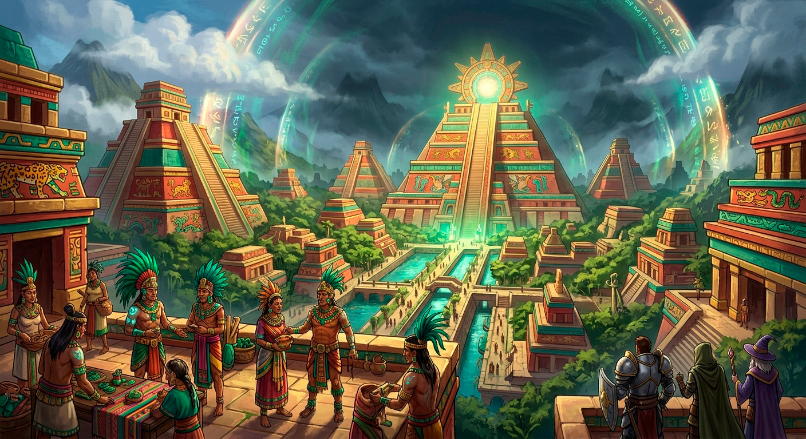
Escavadas nas profundezas de uma cadeia montanhosa antiga, as Minas Amaldiçoadas já foram símbolo de orgulho e prosperidade para uma poderosa comunidade de anões. Seus túneis extensos, reforçados com engenharia impecável, abrigavam veios ricos de minério raro e forjas lendárias, onde armas e artefatos de qualidade incomparável eram criados. Durante gerações, o local foi um centro de riqueza, tradição e conhecimento, até cair nas mãos do lich Maniel, que transformou aquele bastião de vida em um laboratório de horrores.
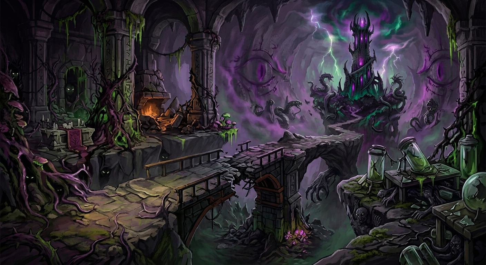
Salões outrora grandiosos tornaram-se câmaras de experimentos profanos, onde criaturas foram criadas, distorcidas e abandonadas. Maniel abandonou o local, mas ele nunca foi totalmente recuperado. Hoje, as minas permanecem abandonadas, habitadas somente pelos experimentos esquecidos, ecos de magia nociva e armadilhas que ainda funcionam.
O Reinado, reconhecendo tanto o perigo quanto o valor estratégico das minas, oferece grandes recompensas àqueles que limpam e restauram as câmaras à coroa. Para os anões, no entanto, essa missão vai além de ouro ou território: trata-se de honra, de recuperar um lar perdido e apagar uma mancha em sua história. Diversos grupos avançam pelos corredores, enfrentando criaturas deformadas e fenômenos inexplicáveis, mas poucos conseguiram ir muito longe.
Ainda permanece uma presença maligna, densa e quase consciente, que parece resistir a qualquer tentativa de purificação. A população acredita que seja um resquício do poder de Maniel, mas conjuradores temem que seja algo ainda mais antigo, despertado por suas ações.
Outrora o coração espiritual de Phantasia, o Monastério Plácido ergue-se em um local remoto e silencioso, afastado das rotas comuns e envolto por uma atmosfera de profunda serenidade.
Construído cercado pela Floresta Negra, as Terras Piores e uma cadeia de montanhas, o monastério parece existir à margem do tempo, onde o som do mundo exterior mal chega. Seus pátios de pedra, jardins cuidadosamente mantidos e salões simples refletem uma filosofia de desapego e contemplação, onde cada detalhe convida à introspecção.
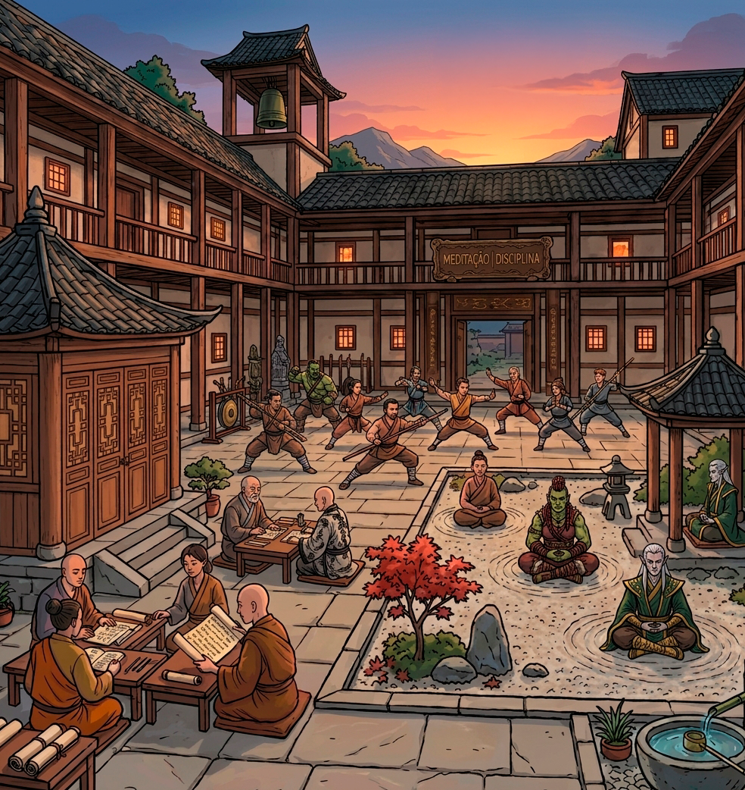
Foi ali que, por gerações, líderes espirituais guiaram o povo do Reinado, antes que mudanças políticas e religiosas deslocassem esse papel para Gothica.
Hoje o Monastério Plácido abriga apenas os mais dedicados. Monges e estudiosos vivem em rotina austera, dividindo seus dias entre meditação, estudo de textos antigos e práticas que buscam compreender os mistérios da alma, da vida e do equilíbrio entre corpo e mente. No entanto, o monastério não é feito apenas de silêncio e contemplação. Entre seus muros também são treinados guerreiros excepcionais, praticantes de antigas artes marciais que combinam disciplina física e domínio espiritual.
Apesar de sua aparência pacífica, há rumores de que o isolamento do monastério não foi apenas uma escolha, mas uma necessidade. Alguns dizem que conhecimentos guardados em seus arquivos são perigosos demais para o mundo exterior; outros acreditam que seus monges vigiam algo ou alguém que não deve ser perturbado. Seja qual for a verdade, o local permanece como um refúgio de sabedoria.
Escondido além do alcance do conhecimento comum, o Mundo Perdido é uma região isolada onde o tempo parece ter seguido um curso próprio, alheio às transformações externas. Ali, a vida floresce como em eras imemoriais: florestas densas e primitivas, pântanos ancestrais e vastas planícies abrigam criaturas que há muito desapareceram do restante do mundo, incluindo os dinossauros descritos em textos antigos apenas conhecidos através de fósseis.
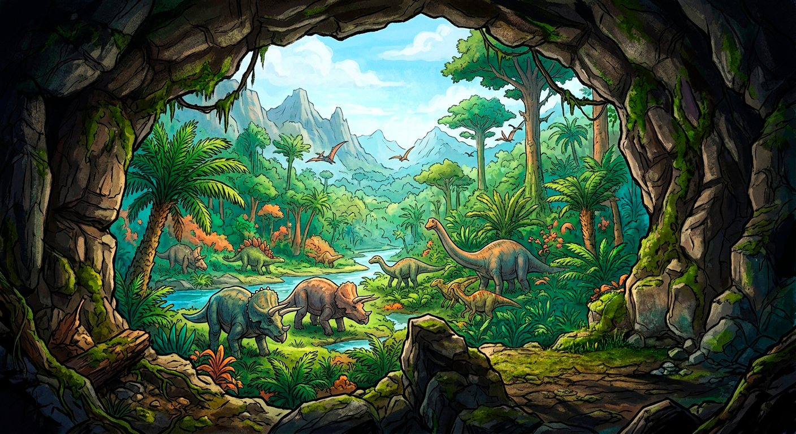
É um ecossistema selvagem e intacto, onde predadores colossais dominam e a própria natureza impõe leis que nenhum povo moderno seria capaz de controlar. O isolamento desse lugar parece ser mero acaso.
A única possível entrada para esse domínio talvez esteja nas profundezas das Minas Amaldiçoadas.
Um lugar onde o passado ainda vive em sua forma mais pura... Para estudiosos, seria uma descoberta incomparável; para exploradores, um desafio irresistível; mas para a maioria, é melhor que permaneça exatamente como está: perdido.
Erguida no lado oposto do Castelo Sinistro, a fortaleza nasceu como uma sentinela inabalável, projetada para vigiar cada movimento vindo do sombrio domínio do lich.
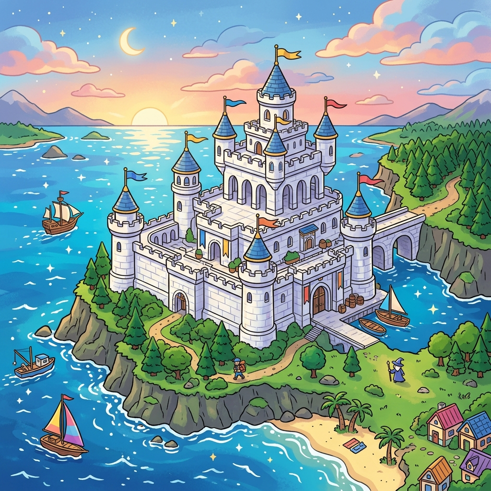
Suas muralhas altas e espessas, reforçadas por torres de observação e baluartes, foram concebidas não apenas para resistir a invasões, mas para servir como o primeiro e último bastião contra qualquer ameaça que emergisse das trevas. Houve um tempo em que, dia e noite, vigias atentos percorrram seus parapeitos, atentos a sinais de magia profana ou movimentos suspeitos além do horizonte. Hoje meia dúzia de guardas anda por ali, sem saber o que exatamente estão procurando.
Com o passar das eras, a cidadela deixou de ser apenas um posto avançado e transformou-se no coração militar de Phantasia. Suas dependências cresceram, abrigando campos de treinamento e arsenais vastos. É ali que reside a lendária Guarda de Elite do Rei, guerreiros escolhidos não apenas por sua força, mas por sua lealdade inquebrantável.
Ao sul de Gothica, as terras firmes cedem lugar a uma vasta extensão de pântanos, onde água escura, vegetação densa e solo instável compõem um ambiente traiçoeiro, porém ricamente habitado.
Nessas regiões mais “comuns”, comunidades resistentes aprenderam a sobreviver, dominando rotas seguras, construindo sobre palafitas e convivendo com os perigos naturais. No entanto, existe uma porção específica desse pântano que até mesmo os mais experientes evitam.
O chamado Pântano Venenoso é marcado por uma névoa constante, de coloração esverdeada ou acinzentada, que se arrasta rente ao solo e exala um odor amargo e sufocante. Aqueles que a respiram sentem rapidamente seus efeitos: tontura, fraqueza e, em casos mais graves, morte lenta e dolorosa. Máscaras, filtros improvisados e até magia são usados por raros exploradores que se arriscam ali, mas nem sempre são suficientes. A água é imprópria, o solo instável esconde bolsões de gás e armadilhas naturais, e até o simples ato de caminhar se torna um risco constante.
Como se não bastasse, toda forma de vida naquele ambiente parece carregada de veneno. Insetos, anfíbios e répteis desenvolveram toxinas potentes, enquanto criaturas maiores exibem presas, ferrões ou secreções letais. Alguns estudiosos acreditam que a região foi afetada por algum evento mágico antigo, talvez ligado às mesmas forças que corromperam outras partes de Phantasia.
O povo fala de ruínas submersas, luzes estranhas na névoa e sons que não parecem pertencer a nenhuma criatura conhecida.
Muito além das águas que separam Phantasia de outras terras, ergue-se o chamado Reino Distante. Foi fundado por rebeldes, dissidentes e sobreviventes que, durante a Guerra do Lich, recusaram-se a se submeter ao avanço de Maniel e escolheram o exílio como única forma de preservar suas vidas e ideais. Em embarcações improvisadas às pressas, cruzaram o mar rumo ao desconhecido, levando consigo fragmentos da cultura, da esperança e da resistência.
No Sul, recomeçaram. Suas cidades refletem essa origem: fortificadas, funcionais e voltadas tanto para defesa quanto para crescimento. Diferente de Phantasia, onde tradições antigas ainda pesam sobre as decisões, o Reino Distante valoriza adaptação, pragmatismo e inovação.
Apesar de sua origem rebelde, o reino não é necessariamente hostil à coroa de Phantasia, mas tampouco se submete a ela.
Esse reino não é apenas um refúgio de sobreviventes, é a porta de entrada para um mundo ainda maior, cheio de possibilidades e perigos que ainda não foram totalmente revelados.
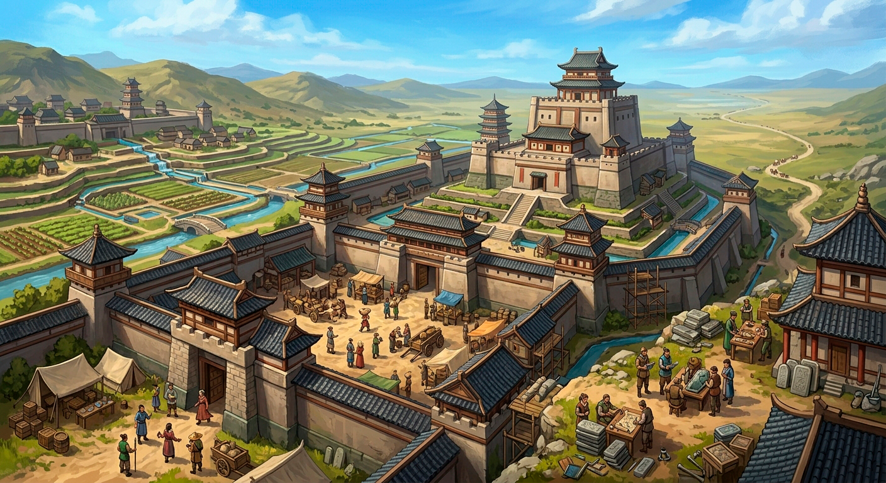
Apesar do nome, a cidade permanece sob o domínio da coroa de Phantasia, sendo um de seus territórios mais respeitados e politicamente sensíveis. Sua denominação remonta ao período turbulento que se seguiu à guerra contra Maniel, quando líderes, emissários e representantes de diferentes povos se reuniram ali pela primeira vez, buscando não apenas encerrar conflitos, mas redesenhar o futuro de todo o continente. Foi nesse solo que antigas rivalidades deram lugar a tratados e onde decisões históricas começaram a moldar uma nova era de convivência.
Hoje, a cidade consolidou-se como o principal centro diplomático do Reinado. Suas construções refletem essa diversidade: salões amplos destinados a assembleias, embaixadas que carregam as marcas culturais de povos distintos e praças onde línguas diferentes se misturam em conversas constantes.
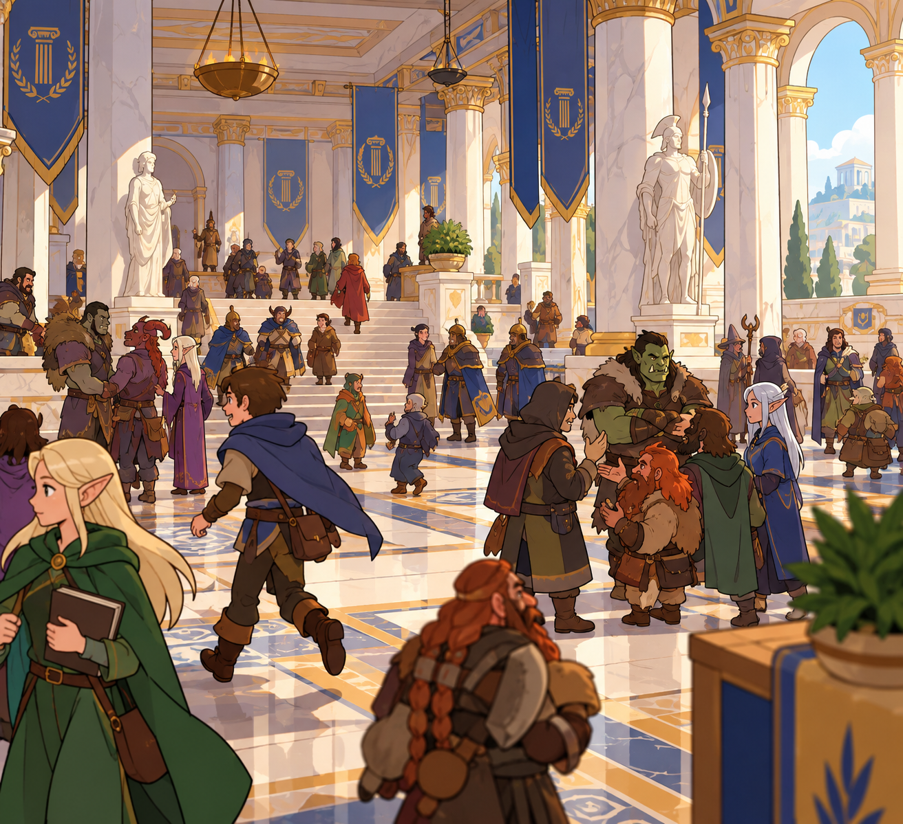
Representantes de diversas espécies e nações se encontram regularmente para debater leis, acordos comerciais, disputas territoriais e alianças estratégicas. No entanto, por trás da aparência de civilidade e ordem, a cidade é também um palco de tensões sutis, intrigas políticas, jogos de influência e negociações silenciosas que podem definir o destino de Phantasia sem que uma única espada seja desembainhada.
Os mais velhos contam uma história sobre como, quase uma década atrás, o céu de Phantasia foi rasgado por uma luz intensa, mais brilhante que qualquer estrela, que surgiu no firmamento e atravessou o horizonte em silêncio absoluto. Depois de alguns minutos cruzando o céu em silêncio, de repente, transformou-se em uma colossal bola de fogo. O impacto foi catastrófico. Um estrondo ensurdecedor reverberou por todo o continente, seguido por um tremor que afetou a terra de norte a sul.
Quem testemunhou o evento (foram muitos!) afirma com convicção que o objeto caiu em algum ponto das Terras Ruins. No entanto, todas as expedições enviadas para localizar o ponto de impacto falharam. Não há cratera confirmada, nem vestígios claros da colisão. Apenas relatos desconexos e marcas vagas no terreno que já desapareceram há muitos anos, com o tempo.
Alguns exploradores encontraram áreas onde o solo parece vitrificado, como se tivesse sido exposto a um calor impossível, regiões onde a bússola enlouquece, a magia se comporta de forma errática e o próprio tempo parece se distorcer por breves instantes. Mas toda a curiosidade sobre esse evento já foi abandonada.
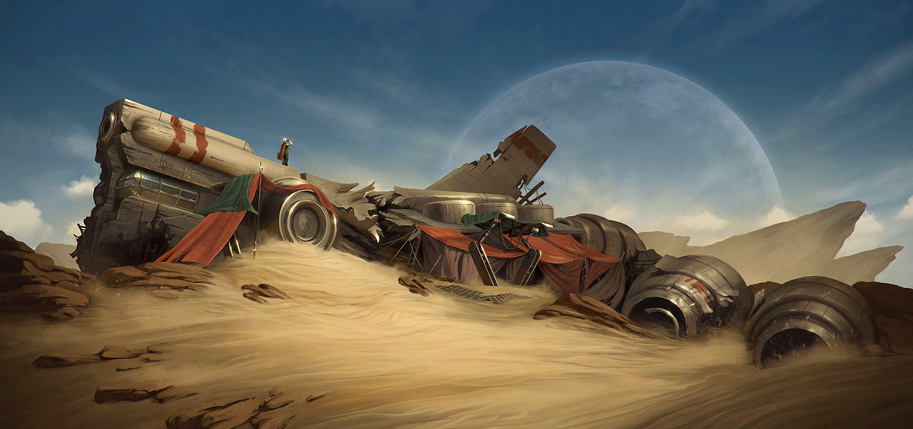
Espalhadas por uma região hoje silenciosa e melancólica, as Ruínas Ciclopeanas são o que restou de uma civilização singular: os ciclopes, seres mágicos de imensa estatura e força, mas de natureza surpreendentemente pacífica. Havia beleza na simplicidade de sua arquitetura e sabedoria em seus modos de vida, baseados no equilíbrio entre força e contemplação.
Durante séculos, viveram afastados dos conflitos do mundo, até que a guerra de Maniel alcançou suas terras. Os ciclopes foram os primeiros a resistir com verdadeira determinação. Mesmo sendo um povo pacífico, lutaram com tudo o que possuíam para defender seu lar. Suas muralhas resistiram por um tempo, e suas forças causaram perdas significativas ao exército de mortos. Ainda assim, não foram páreo para a maré incessante de horrores que avançava. Um a um, seus bastiões caíram, e sua civilização foi esmagada até restarem apenas ecos de sua grandeza.
Hoje, o que se vê são ruínas saqueadas, quebradas e desgastadas pelo tempo e pelo abandono. Colunas gigantes tombadas, salões vazios e estátuas partidas contam uma história de resistência e queda. Muitos já exploraram o local em busca de relíquias, e quase tudo de valor aparente foi levado. Ainda assim, há algo que permanece intocado, que até hoje desafia qualquer tentativa de compreensão.
No coração das ruínas ergue-se o Portão.
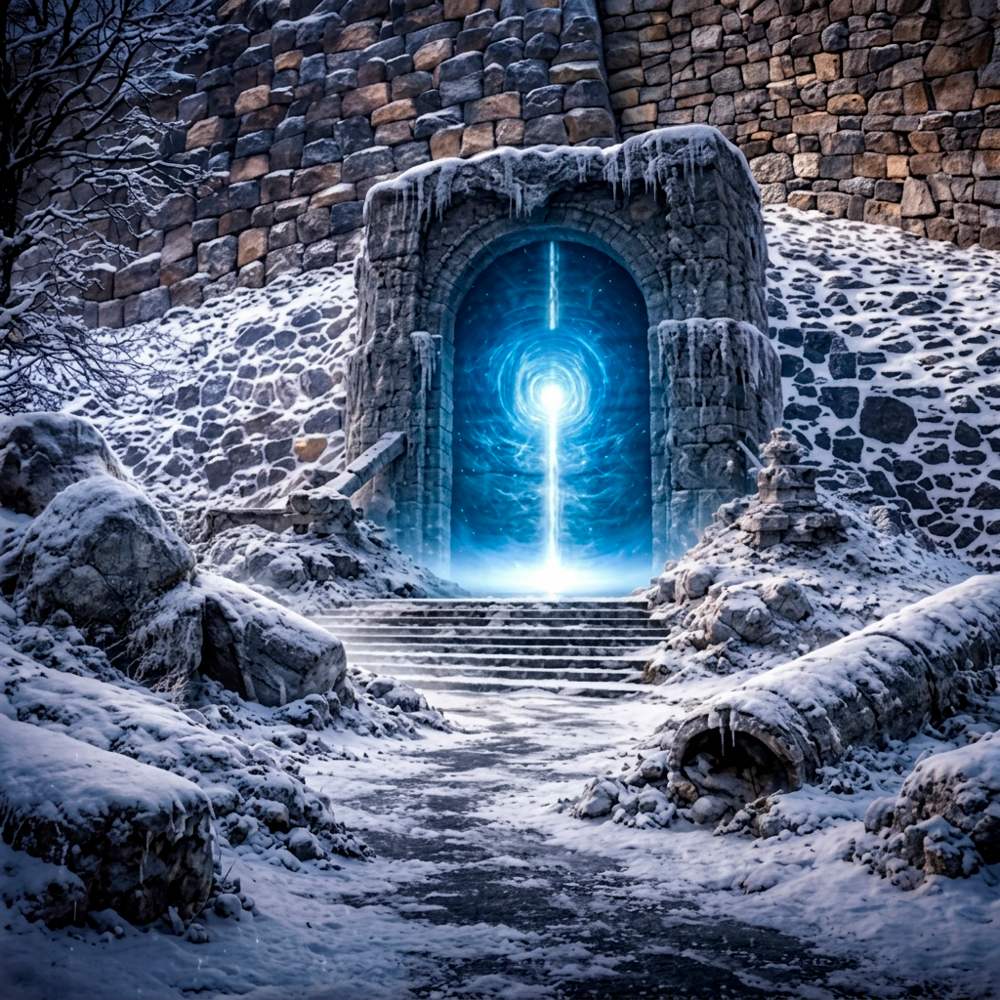
Enorme e aparentemente indestrutível, o Portão não apresenta inscrições nem mecanismos visíveis. Ele simplesmente está ali, fechado, silencioso e impenetrável. Uma magia poderosa o envolve, repelindo qualquer tentativa de aproximação mais profunda. Magos, estudiosos e aventureiros já tentaram atravessá-lo ou compreender sua natureza, mas todos falharam. Ninguém sabe para onde o Portão leva. O Portão apenas permanece, solitário e debochando de quem tenta ver o outro lado.
As Terras Ruins são parte de uma vasta planície ressecada onde o solo rachado e o vento constante carregam poeira e desolação por quilômetros a perder de vista. A vegetação é escassa e retorcida, sobrevivendo apenas em formas endurecidas e de aparência morta, enquanto o céu frequentemente assume tons opacos, como se a luz do sol relutasse em tocar aquele lugar. Mais ao sul, a paisagem degrada-se ainda mais nas chamadas Terras Piores, onde a própria terra parece corrompida, marcada por manchas escuras, crateras antigas e formações rochosas que lembram ossos gigantes emergindo do chão.
Apesar de sua aparência inóspita, essas terras estão longe de serem vazias. Criaturas colossais vagam livremente, predadores brutais moldados pela necessidade de sobreviver em um ambiente tão hostil. Monstros violentos habitam cavernas, fendas e regiões ocultas, tornando qualquer travessia uma empreitada extremamente perigosa.
Poucos ousam atravessar as Terras Ruins sem motivos ou proteção, e aqueles que o fazem geralmente têm pouca escolha. Histórias falam de ruínas esquecidas, batalhas antigas e uma região que já foi fértil, transformada por um evento catastrófico cujo eco ainda persiste no solo.
Aqui vivem alguns grupos de criminosos, salteadores e mercenários, dentre os quais os mais famosos são parte do grupo Bodes Brancos.
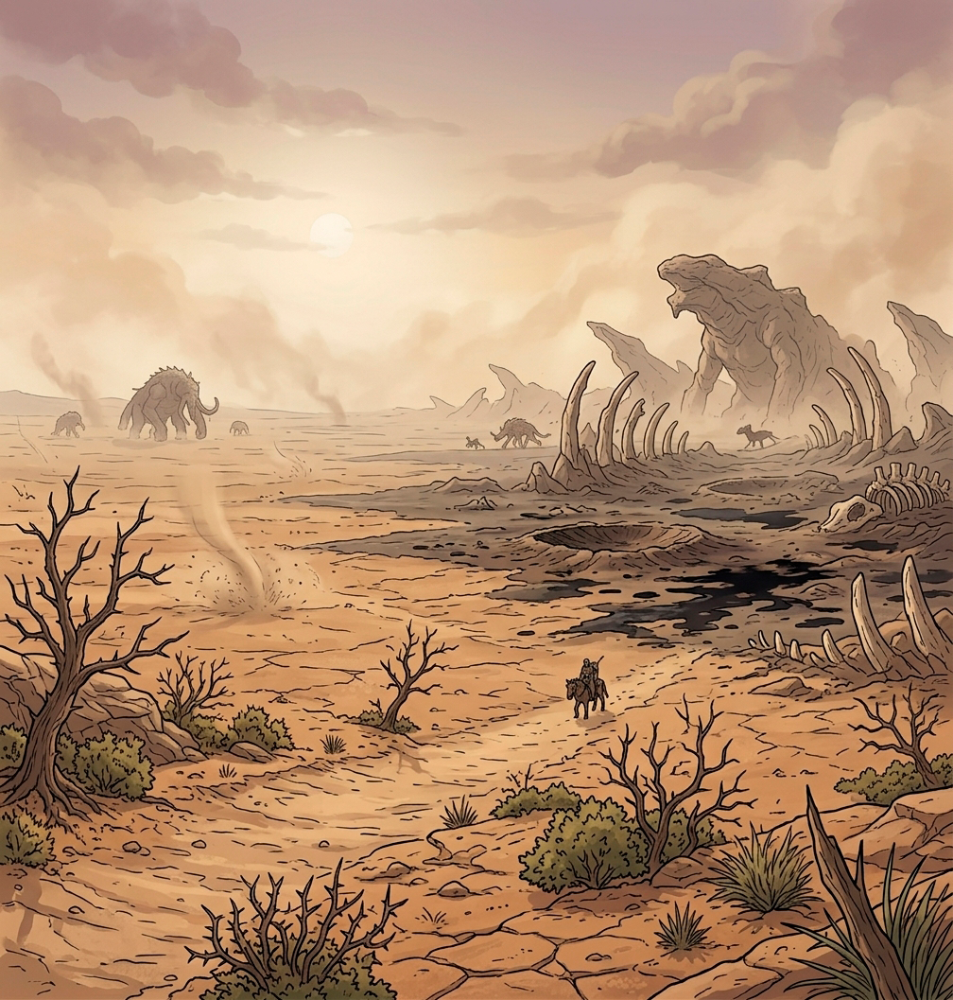
Sob a superfície de Phantasia, estende-se um vasto e inquietante complexo de tumbas e catacumbas, remanescente de uma civilização tão antiga que seu nome se perdeu no tempo. Nenhum registro confiável sobre seu povo, cultura ou queda sobreviveu, apenas ruínas silenciosas, inscrições indecifráveis e uma arquitetura que não se assemelha a nada conhecido no Reinado. Corredores de pedra, câmaras seladas e estruturas subterrâneas que desafiam a lógica sugerem um domínio de conhecimento ou poder que ainda hoje intriga estudiosos e magos.
Apesar dos inúmeros riscos, o local tornou-se um destino recorrente para aventureiros, exploradores e saqueadores em busca de relíquias, ouro e respostas. Poucos, no entanto, retornam com mais do que fragmentos e alguns sequer retornam. Obstáculos físicos e mágicos bloqueiam o avanço nas regiões mais profundas: portas que não se abrem por meios comuns, armadilhas que se rearmam sozinhas, e barreiras arcanas que parecem reagir à presença dos vivos. Há relatos de corredores que mudam de lugar, escadas que levam de volta ao início e salas que desaparecem quando revisitadas.
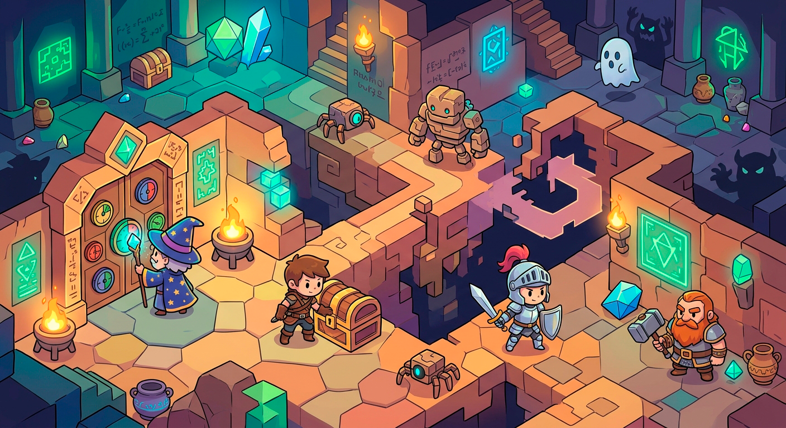
As histórias que cercam o complexo são tão numerosas quanto perturbadoras. Fala-se de mortos-vivos como múmias que vagam sem descanso, guardiões de metal esquecidos que ainda cumprem ordens antigas e criaturas que espreitam nas sombras, esperando pelo momento certo de atacar. Outros contam sobre tesouros e conhecimentos incalculáveis escondidos em câmaras secretas, protegidos por enigmas e mecanismos impossíveis.
Verdade ou exagero, uma coisa é certa: aquele lugar não foi feito para ser explorado. E talvez ainda esteja cumprindo o propósito para o qual foi construído, seja ele qual for.